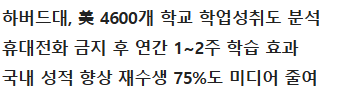

서울대 간 이부진 아들도 끊었다…하버드 연구 결과 '깜짝' : 네이트 뉴스

입시정보업체 진학사가 지난 8월 발표한 설문조사에 따르면 2026학년도 수능에서 성적이 상승한 재수생 842명 가운데 74.9%가 재수 기간 스마트폰과 SNS, 유튜브 등 미디어 사용을 적극적으로 줄인 것으로 나타났다.
응답자의 62.4%는 미디어를 최소한으로 사용했다고 답했다.
아예 사용을 차단했다는 비율도 12.6%였다.
이 같은 공부법은 올해 서울대에 합격한 이부진 호텔신라 사장의 아들 임동현군이 공개한 학습 경험과도 맞닿아 있다.
임군은 서울대 합격 이후 입시학원에서 열린 특강에서 후배들에게 "3년간 스마트폰과 게임을 완전히 단절할 것을 적극 추천한다"고 했다.
인간 스마트폰들이 널렸잖아